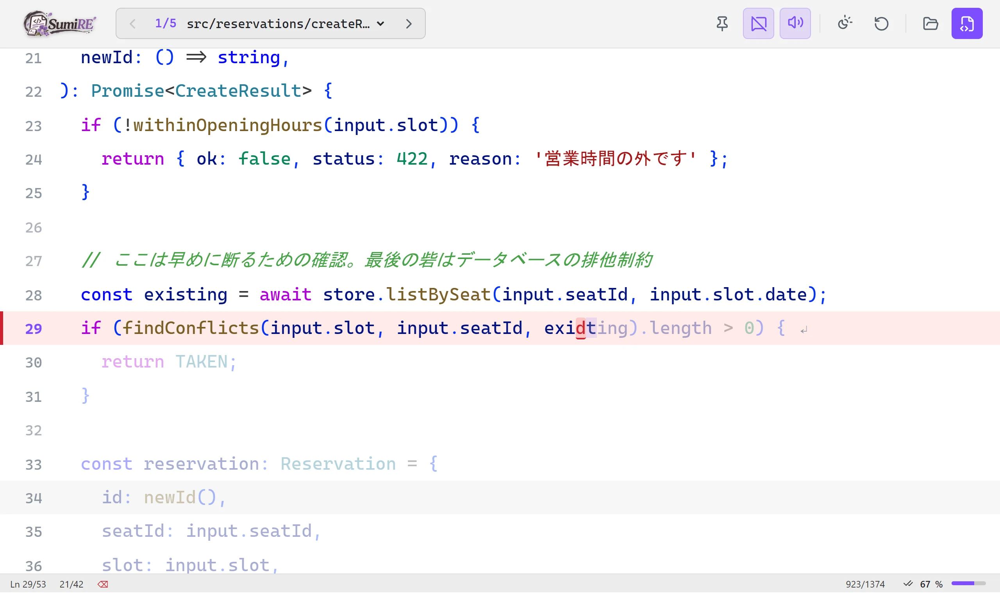
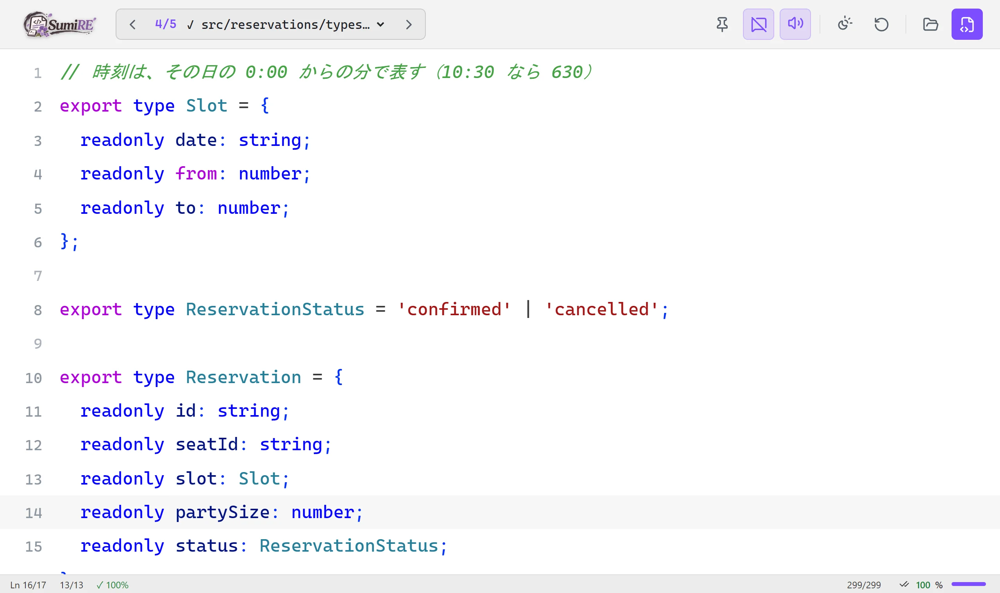
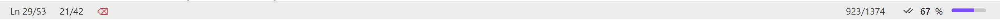
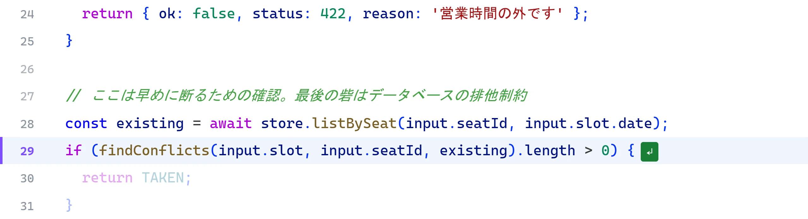
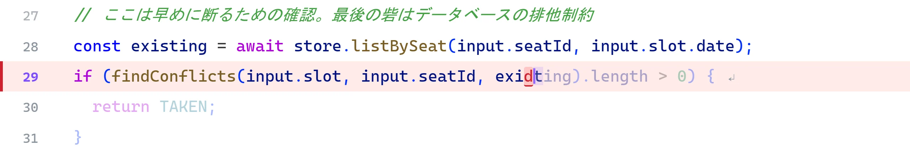
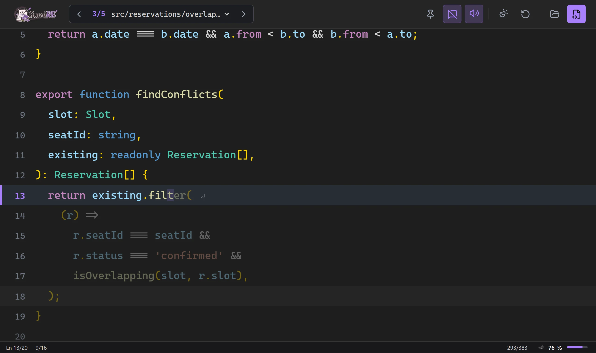

作成済みコードを、 上からなぞって、 指で覚える。
自分のプロジェクトのスクリプトを、そのまま写経のお手本にするタイピングツールです。フォルダで sumire と打つだけで、中のコードがノートのページになります。ファイルは読むだけで、書き換えません。

AI が書いたコード、
読んだだけで終わっていませんか？
AI と開発していると、動くコードが一瞬で手に入ります。そのぶん、自分の手で書く機会がなくなります。
- レビューして分かったつもりでも、何も見ずには書けない
- 写経しようとエディタに書き写すと、ファイルの行き来やインデント、括弧の自動補完がじゃまをする
- タイピング練習のサイトでは、自分のプロジェクトのコードは打てない
SumiRE は、自分のフォルダのコードを、そのまま写経のお手本にします。
開いて、なぞって、めくる
-
開く
なぞりたいフォルダで
sumireと打ちます。ブラウザが開き、中のスクリプトが 1 ファイル 1 ページのノートになります。~/komorebi-reserve $ sumire SumiRE: ~/komorebi-reserve 5 ファイル → http://localhost:4848/ 終了するには Ctrl+C -
なぞる
薄く表示されたコードの上に、そのまま打ちます。お手本と打つ場所が同じなので、目を動かしません。正しく打てた文字には色がつき、打ち間違えた文字は赤いまま残ります。Backspace で消して打ち直します。
打ち間違えた form を消して、from と打ち直す -
めくる
最後の行まで打って Enter を押すと、次のファイルへめくれます。打ち終えたファイルには ✓ が付き、下のバーの右端で進み具合が分かります。途中のファイルに戻っても、続きから打てます。

1 ファイル打ち終えたところ 
右端の数字が、開いているファイルの進み具合
打つことだけに、手を使う
打たなくていいものは、飛ばす
行頭のインデント、空行、コメントの行は、カーソルが自動で飛び越えます。コメントも打ちたいときは、上のボタンで切り替えられます。

間違えた場所が、見える
打ち間違えた文字は、赤いまま残ります。赤い文字が残っているうちは、次の行へ進みません。

夜は、Dark+ の配色で
配色は、OS に合わせる・夜・昼の 3 つから選べます。打ち終えた行は VS Code の Dark+ と同じ色になります。

名前のこと
墨入れ
下書きの上から、墨で清書すること。薄いコードの上から打ち、色を乗せていく使い方そのものです。
菫
花のすみれ。同じ作者の HanaME（花見）と対になる道具です。SumiRE は「すみぃれ」と読みます。
はじめかた
必要なもの
- Node.js 22.23.4 / 24.22.1 / 26.12.1 以降
- ブラウザ（Chrome・Edge・Firefox・Safari）
打った内容は保存しません。ブラウザを再読み込みすると、最初からになります。
-
インストールします。画面はビルド済みなので、すぐに使えます。
git clone https://github.com/HarutarouKawamoto/sumire.git cd sumire npm install npm link -
まずは、clone したフォルダに入っている小さなサンプルで試せます。
sumire sample -
自分のプロジェクトでは、なぞりたいフォルダで起動します。ファイルを指定すると、そのページから始まります。
cd your-project sumire sumire src/main.ts
頭で理解して、指で覚える
HanaME花見
AI が書いた .md を読んで、質問して、頭で理解する。
HanaME のサイトへSumiRE墨入れ／菫
AI が書いたコードを上からなぞって打ち、指で覚える。